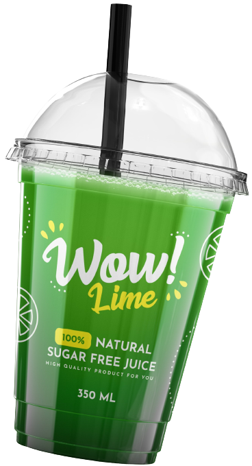

Starbucaks kahvelerini hiç denediniz mi ?
Ad : Emre
Soyad : Değirmenci
Okul Numarası : 192113032
Okulu : Düzce Üniversitesi
Fakültesi : Teknoloji Fakültesi
Bölümü : Bilgisayar Mühendisliği
Yaz günlerinde serinlemek için yeni Cool Lime'ı deneyin.
100% doğal bileşenlerle tamamen organiktir.
Pandemi döneminde evlere kutulu servislerimiz vardır.
Cool Lime Lemonade Lime Aromalı İçicek, misket limonu olarak da adlandılan ve limona göre daha yumuşak bir tada sahip olan lime kullanılarak üretilen bir limonlu içecektir. Rahat bir içim sağlar ve limonlu içecek içmeyi seven kişilere yepyeni bir limonata deneyimi sunar.
Öğleden sonranıza el yapımı bir içecekle eğlenceli hale getirin. Cool lime; narenciye, limon, nane ve salatalığın eşsiz karışımından meydana gelen canlandırıcı ve ferahlatıcı bir içecektir. İçerisindeki yeşil kahve özü sayesinde kahve tadı vermeden enerji artışı sağlayan, düşük kalorili ve oldukca lezzetli bir seçenektir.
Taze öğütülmüş kahve kokusu kadar güzeli var mıdır? Harika, taze ve aromatik.
Sabah taze demlenmiş bir filtre kahveden daha leziz kokan bir şey zor bulunur. Kahve, siyah çekirdekleri sevenleri lezzet olarak da etkiler. Filtre kahvelerinizi Starbucaks'dan alın.